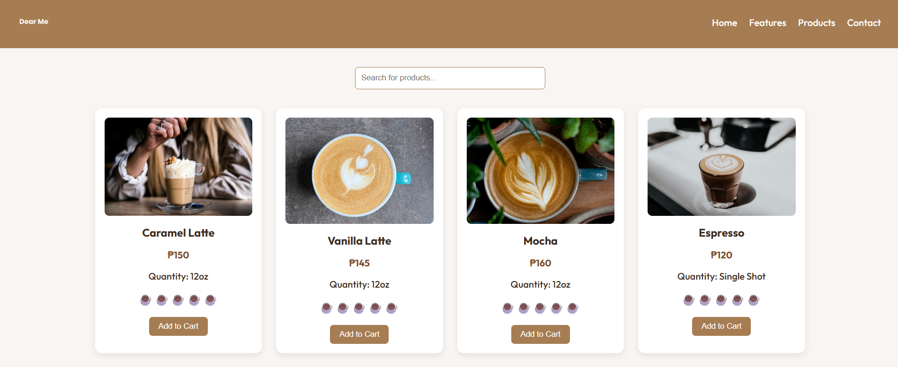
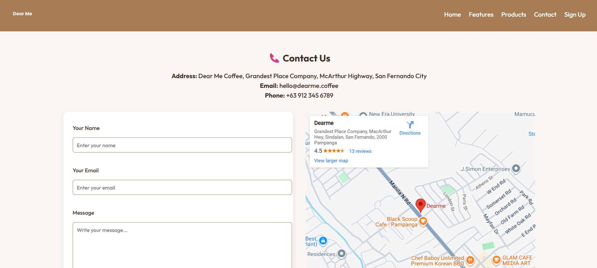
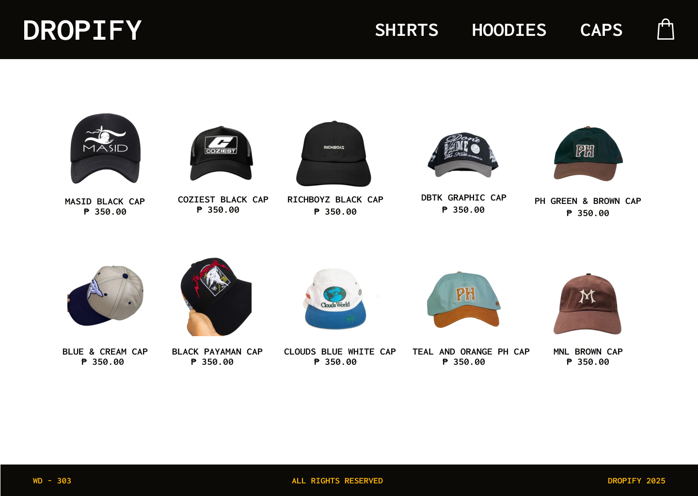
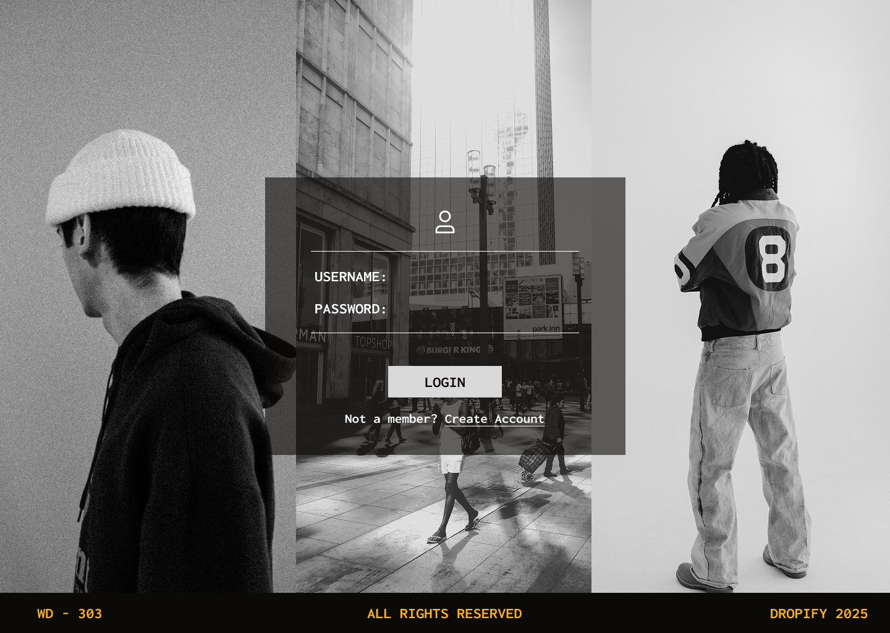
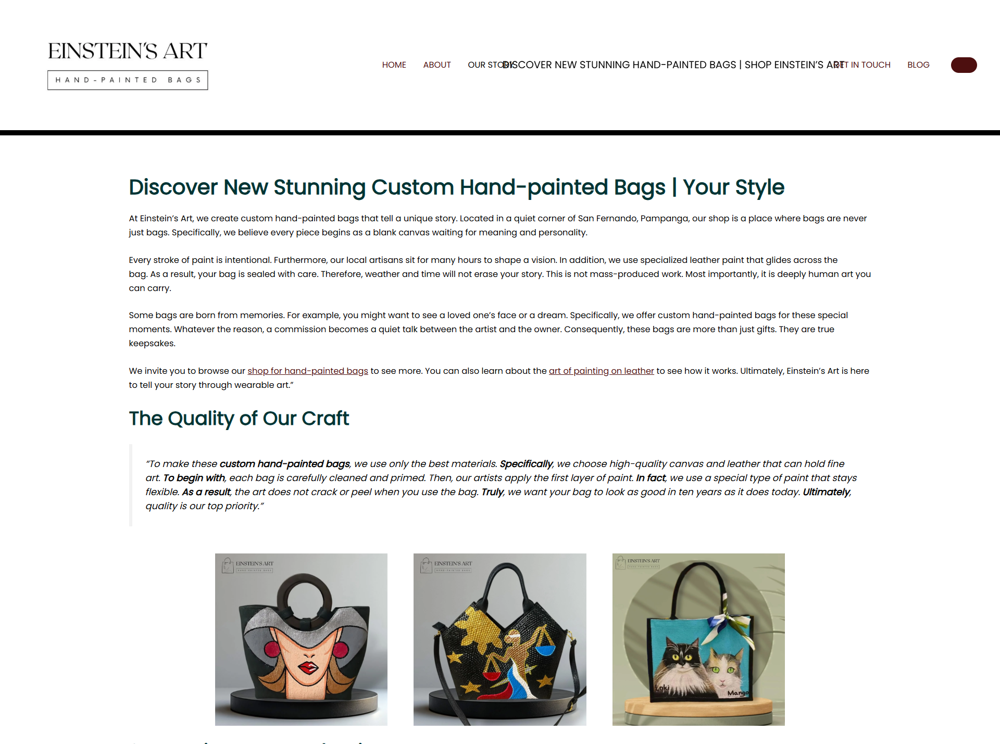
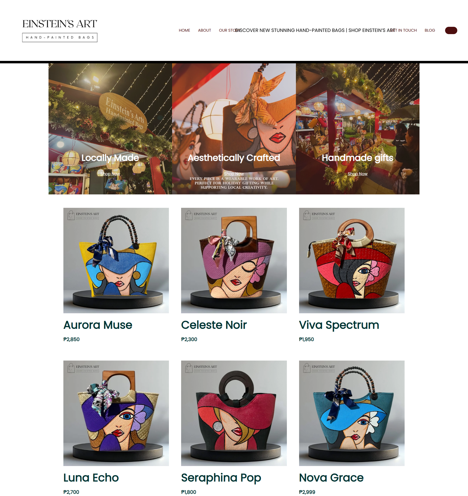
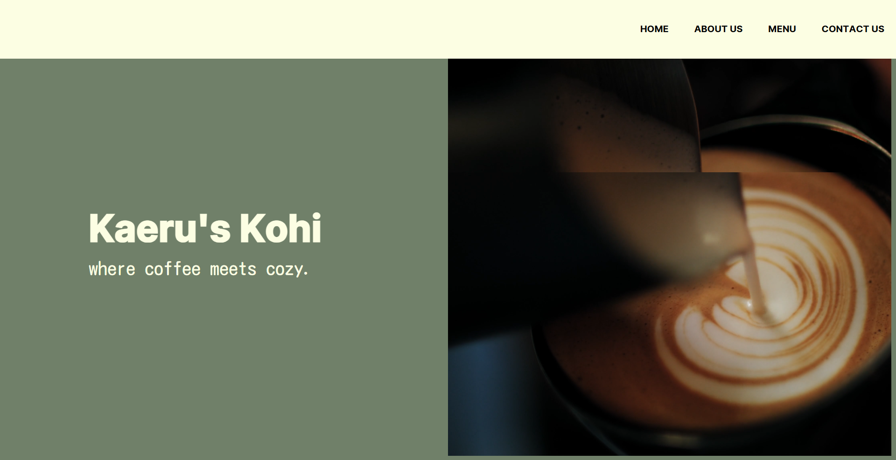
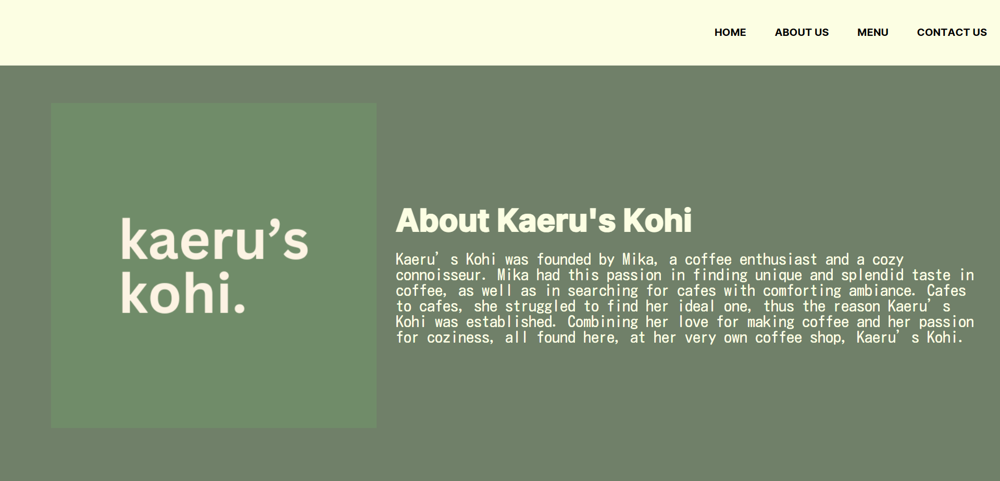
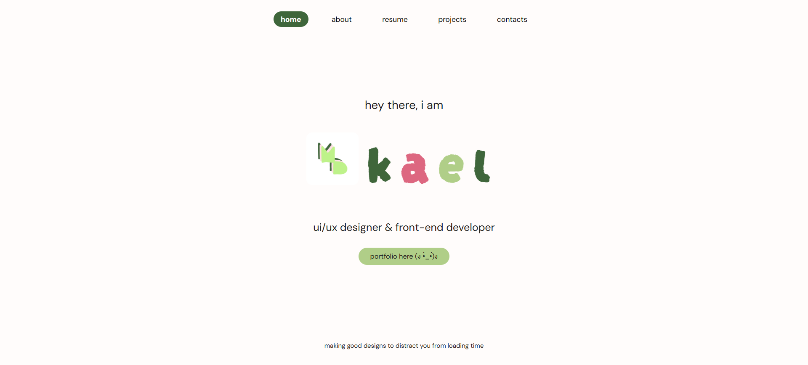
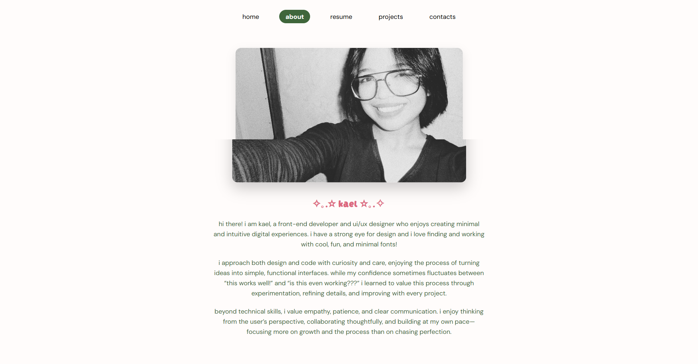

This college WebPub project features a vibrant, café-themed product page designed to showcase coffee and dessert items in a clean, organized grid layout. Built using HTML, CSS, and minimal JavaScript, the project emphasizes clarity, visual hierarchy, and user-friendly navigation. Thoughtful typography, appealing color palettes, and responsive design ensure the page is both engaging and functional across devices, providing a professional presentation of the café’s offerings.
Role: UI/UX Designer, Front-end Developer


This full-stack clothing brand website is built using the MEVN stack (MongoDB, Express.js, Vue.js, Node.js). It features user authentication, product management, and an intuitive interface for both customers and admins. The design emphasizes a responsive layout, clean visuals, and seamless user interactions, ensuring a professional and engaging online shopping experience across all devices.
Role: UI/UX Designer, Front-end Developer


This WordPress-powered fashion website showcases hand-painted handbags through a modern, editorial-style layout. The design focuses on clean visuals, intuitive navigation, and a cohesive color palette to highlight each product. Interactive features and responsive design ensure a seamless browsing experience across devices, while typography and layout choices reflect a sophisticated and stylish brand identity.
Role: WordPres Web and Page Designer


"Kaerus Kohi" is a responsive coffee shop website designed using HTML, CSS, and Figma. The project focuses on a clean, minimal layout to showcase the café’s menu, ambiance, and brand identity. The design emphasizes user-friendly navigation, visual hierarchy, and typography inspired by modern café aesthetics, creating an inviting online presence.
Role: UI/UX Designer, Front-end Developer


This personal portfolio website highlights my skills in UI/UX design and front-end development. It features a fully responsive layout that adapts seamlessly across desktop, tablet, and mobile devices. The portfolio emphasizes smooth navigation, clean design, and consistent typography, providing a professional presentation of my projects, technical skills, and design process. Interactive elements, optimized images, and thoughtful layout choices showcase my ability to create user-friendly and visually appealing digital experiences.
Role: UI/UX Designer, Front-end Developer